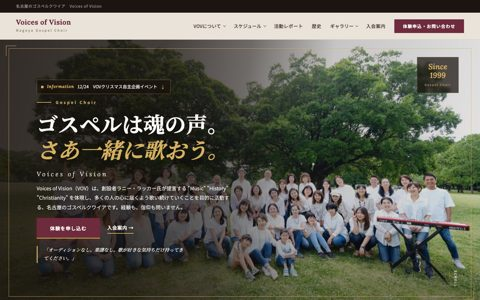
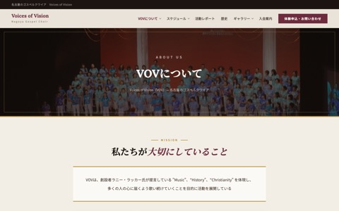
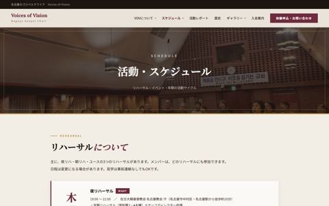
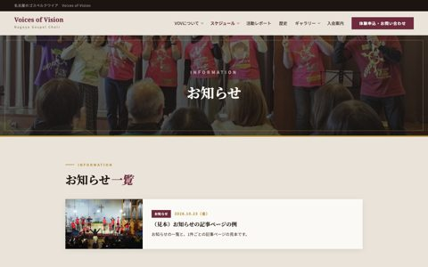
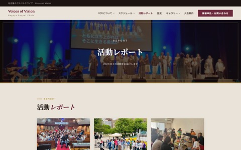
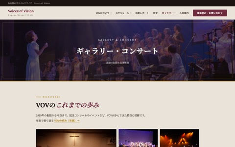
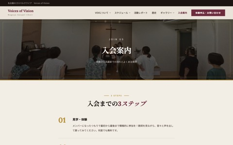
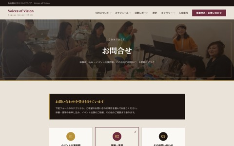

全ページの図
画像は各ページの最初の画面です。「区画」はページの中の見出し、「本文から移動」は本文の中のボタンやリンクの行き先です。メニューとフッターは全ページ共通なので、下の「メニューとフッター」にまとめています。

TOP
vov_top.html
区画（上から順）
- 写真の切り替え＋キャッチコピー＋Information の案内
- VOVが大切にしていること
- リハーサルについて（夜リハ／朝リハ／U25・会費）
- 最新のお知らせ（Information） VOVで更新
- 活動の記録とコンサート（写真5枠・動画1本、We Stand は準備中）
- 活動レポート（新しい3件） VOVで更新
- VOVの歩み（主な5年）
- 一緒に歌いませんか？
本文から移動
- 入会案内（いちばん上の写真の部分と、下部のボタン）
- お問い合わせ（体験を申し込む）
- VOVについて（大切にしていること）
- 活動・スケジュール（大きなボタン・Information）
- ギャラリー（写真5枠・すべて見る）
- VOVの歩み（すべて見る）
- 活動レポート（3件・すべての投稿）

VOVについて
vov_about.html
区画
- 私たちが大切にしていること（3つの柱）
- 指導者紹介（5名）
- リハーサル・会費について（表・地図）
- VOVの歩み（主な5年）
本文から移動

活動・スケジュール
vov_schedule.html
区画
- リハーサルについて（3種・会費）
- リハーサル会場（名古屋・金山の地図）
- お知らせ（新しい1件） VOVで更新
- 直近のイベント・出演情報 VOVで更新
- 月ごとの表 VOVで更新
本文から移動

お知らせ（10/23 新設）
vov_news.html
区画
- お知らせの一覧 VOVで更新
- 1件ごとの記事ページ VOVで更新
ここへ来る道
- TOP の Information
- 活動スケジュールの「お知らせ」
- メニュー「スケジュール ▾」とフッター

活動レポート
vov_posts.html
区画
- 記事の一覧（9件ずつ。続きは「もっと見る」） VOVで更新
- 1件ごとの記事ページ VOVで更新
本文から移動

ギャラリー・コンサート
vov_gallery.html
区画
- VOVのこれまでの歩み（写真44枚＋タイトル）
- 動画（1本。We Stand は準備中）
本文から移動

入会案内
vov_join.html
区画
本文から移動
- 活動・スケジュール（リハーサル情報を見る）
- お問い合わせ

お問い合わせ
vov_contact.html
区画
- カテゴリ（3種）
- お問い合わせフォーム（宛先 gospel@vov-jp.com）
メニューとフッター（全ページ共通）
メニュー（PC）
├─ VOVについて ▾ ─┬ VOVについて（すべて）
│ ├ 指導者紹介
│ ├ リハーサル・会費について
│ └ VOVの歩み
├─ スケジュール ▾ ─┬ 活動・スケジュール（すべて）
│ ├ リハーサル
│ ├ リハーサル会場
│ ├ 直近のイベント・出演情報
│ └ お知らせ
├─ 活動レポート
├─ 歴史（VOVの歩み）
├─ ギャラリー ▾ ──┬ ギャラリー（すべて）
│ ├ これまでの歩み
│ └ 動画
├─ 入会案内
└─［体験申込・お問い合わせ］→ お問い合わせ
メニュー（スマホなど、幅の狭い画面）
トップ／VOVについて／活動・スケジュール／お知らせ／活動レポート／VOVの歩み／ギャラリー・コンサート／入会案内／［体験申込・お問い合わせ］
フッター
Pages ： VOVについて／活動・スケジュール／入会案内／ギャラリー・コンサート
Info ： お知らせ／活動レポート／VOVの歩み（年表）
Contact ： イベント出演依頼／体験・入会／その他問い合わせ（いずれもお問い合わせへ）
お買い物でVOVを応援 ： ふるさと本舗／Amazon
同じ情報が載っている場所
下の情報は、複数のページに載っています。内容が変わるときは、ここに並んだ場所をまとめて直します。
| 情報 | 載っている場所 | 直し方 |
|---|
| イベント・お知らせ | TOP「最新のお知らせ」と上部の案内／お知らせのページ／活動・スケジュール「お知らせ」「直近のイベント」「月ごとの表」 | 1か所 更新画面（microCMS）で1回書くと、ここに並んだ場所すべてに出ます |
| リハーサルの曜日・時間・会場 | TOP「リハーサルについて」／VOVについて「リハーサル・会費について」／活動・スケジュール「リハーサルについて」「月ごとの表」 | 変更があるときは、3ページをまとめてこちらで直します（月ごとの表は曜日のきまりから自動） |
| 会費（4,000円／月・割引） | TOP（Membership）／VOVについて／活動・スケジュール／入会案内（ステップ3・よくある質問） | 4か所をまとめて直します |
| 会場の住所と地図 | VOVについて（表）／活動・スケジュール（地図2か所）／TOP（会場名と住所） | まとめて直します |
| 年表 | VOVの歩み（全体）／TOP と VOVについて（主な5年。同じ文） | 年表を直したら、主な5年もそろえます |
| 入会の流れ | 入会案内 | 1か所 TOP からは「入会案内」ボタンで移動する形にしました（10/4 のご依頼 No.120） |
| 「一緒に歌いませんか？」の文 | TOP と、TOP 以外の6ページの下部 | 同じ文にそろえてあります |
| 動画 | TOP（Movie）／ギャラリー（動画） | 同じ動画です（We Stand は準備中） |
VOV で更新できる場所
書き方は 更新のしかた のページにまとめました。
10/24 のご回答で、VOV で更新するのは「お知らせ（イベント・出演を含む）」と「活動レポート」の2つに決まりました。更新画面（microCMS）は用意してあります。招待メールをお送りしたら使えます。公開から2〜3分でホームページに出ます。
| 場所 | 中身 | 状態 |
|---|
| お知らせ（Information） | 天候による中止、チラシの公開など。1件ごとに記事ページができ、見出しが TOP の「最新のお知らせ」・上部の案内・活動スケジュールに出ます | VOVで更新 |
| イベント・出演 | 日付・名前・時間・会場。TOP、直近のイベント、月ごとの表に同時に出ます | VOVで更新 |
| 活動レポート | 写真・タイトル・本文。TOP の新しい3件にも出ます | VOVで更新 |
| VOVのこれまでの歩み | 記念コンサートや普段の活動の写真44枚＋タイトル。原則として更新しない場所（10/24 のご回答） | 更新しない |
上の表以外（指導者紹介、3つの柱、年表、入会案内など）は、文言の修正・写真の差し替えのご依頼をいただければ、こちらで直します。
月ごとの表のしくみ
活動・スケジュールの「月ごとの表」は、次のしくみで並んでいます。（シート No.93 のご質問）
- リハーサルは自動で並びます。「第何週の何曜日」というきまりから、毎月の日付を計算して表示します。毎月入力する必要はありません。
定期リハーサル＝第2・4木曜／自主リハーサル＝第1・3木曜／朝リハーサル＝第1・3金曜（金山）／VOV-U25＝第1・2木曜
- イベントは1か所に足すだけです。日付・名前・時間・会場を足すと、月ごとの表と「直近のイベント」、TOP の「最新のお知らせ」に同時に出ます。
- 終わったイベントは自動で片づきます。「直近のイベント」と TOP からは日付が過ぎると消えます。月ごとの表には記録として残ります。
- 前の月・次の月のボタンで、2026年9月から2027年12月まで見られます。
いまの表でできないこと：祝日や会場の都合で休みになる日を、表から消すしくみはまだありません。休みのご連絡は「最新のお知らせ」に載せる形を考えています。表の上でも「休み」と出したい場合は、追加できます。